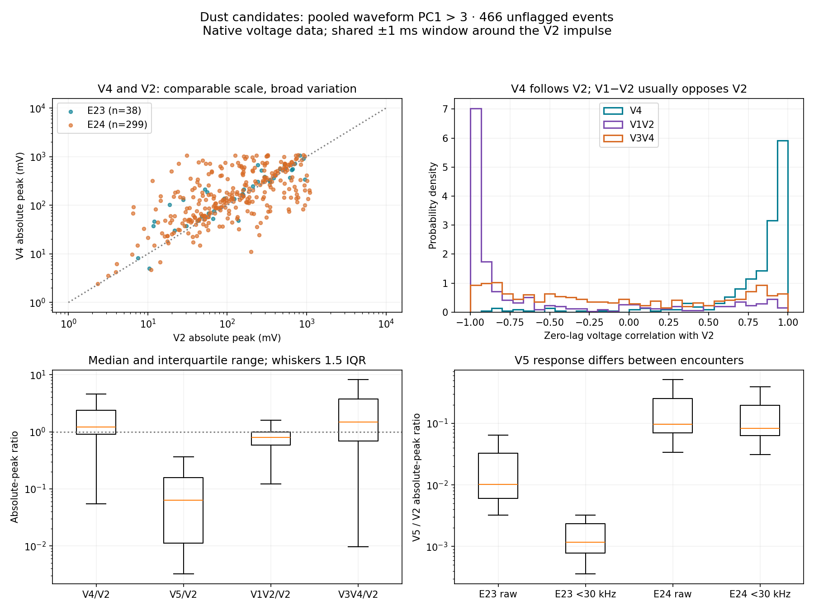
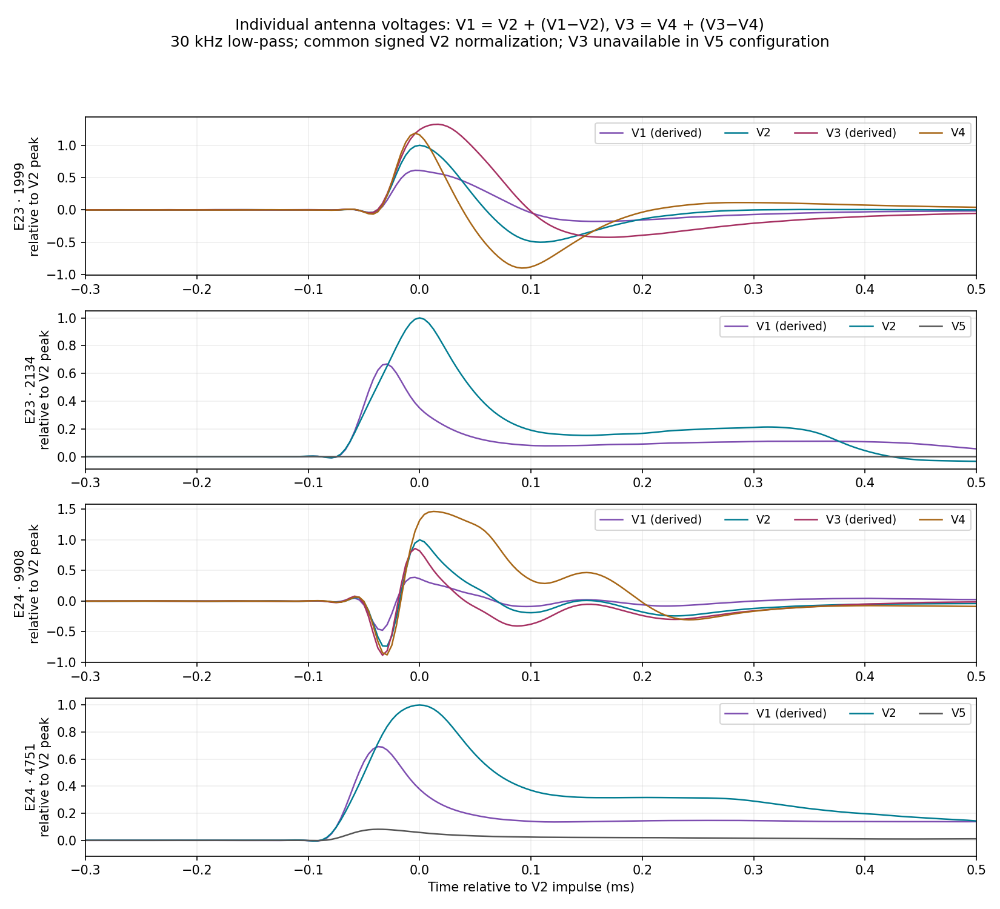
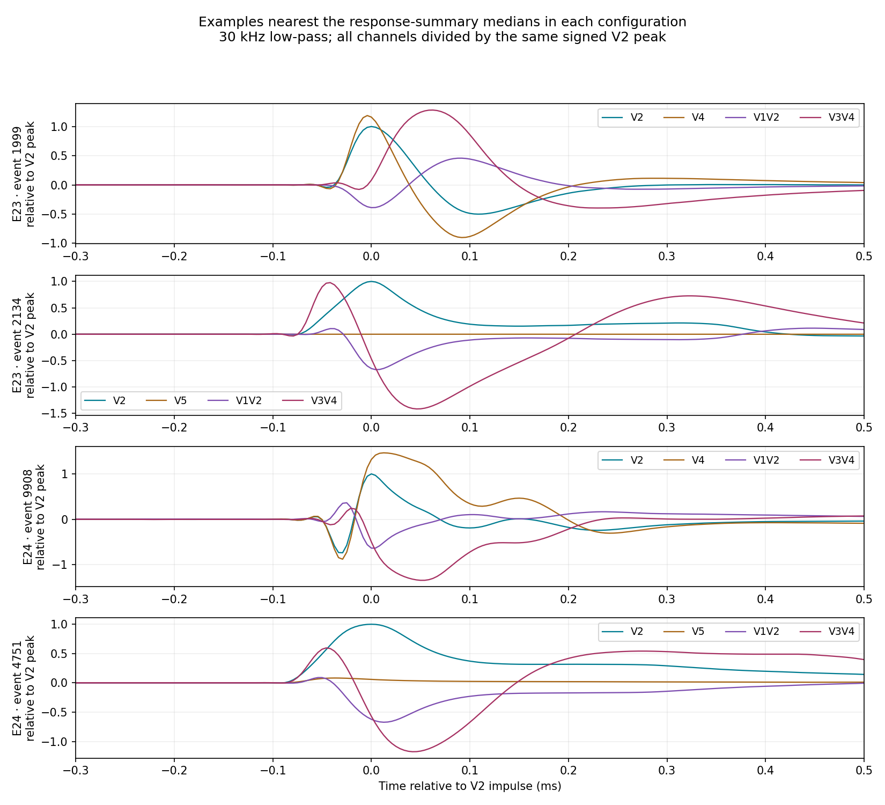

668 events have current pooled waveform PC1 > 3. There are 141 E23 and 527 E24 events. The quantitative comparison below uses the 466 without a burst saturation flag (99 E23, 367 E24). All 202 flagged events remain in the downloadable measurements. The flag may originate in any analog channel; it is not proof that a voltage channel clipped.
The most consistent pattern is V4 following V2, while V1−V2 opposes V2. In the V4 configuration, the median native correlation of V4 with V2 is +0.91 and 87% have matching peak polarity. The V1−V2 correlation is about −0.92 in either configuration. V3−V4 has a broad distribution spanning both signs, with no fixed amplitude ratio. These are measured engineering-voltage patterns, not a physical dust model.
Ratios use maximum absolute values in a shared ±1 ms window. Parentheses give the middle 50% of events. The polarity column compares signs of each channel’s own largest excursion; maxima need not occur at exactly the same sample.
| Configuration | Pair | N | Peak ratio: median (IQR) | Median r | Same peak polarity |
|---|---|---|---|---|---|
| V4 | V4/V2 | 337 | 1.21 (0.90–2.39) | 0.91 | 87% |
| V4 | V1V2/V2 | 337 | 0.86 (0.60–1.13) | -0.92 | 28% |
| V4 | V3V4/V2 | 337 | 1.72 (0.59–4.77) | -0.17 | 52% |
| V5 | V5/V2 | 129 | 0.06 (0.01–0.16) | 0.15 | 60% |
| V5 | V1V2/V2 | 129 | 0.67 (0.58–0.88) | -0.93 | 20% |
| V5 | V3V4/V2 | 129 | 1.28 (0.76–1.86) | -0.30 | 39% |

Median V5/V2 native peak ratio is 0.010 in E23 (61 events), versus 0.097 in E24 (68 events). Median native correlation is 0.013 versus 0.754. Thus V5 is especially weak and poorly correlated in the E23 subset; the pooled median hides this difference. Frequency response, noise, and operating conditions have not been corrected or matched between these populations. The 30 kHz sensitivity check makes the E23 V5 response still weaker.
In nominal encounter attitude, V1 and V4 are on the ram side and V2 and V3 on the anti-ram side. Spacecraft +X is approximately along orbital motion near perihelion; +Z is sunward. Rolls and tilts outside encounter require event-specific attitude before assigning a travel-relative direction. See Pusack et al. (2021), Figure 1 and §3.2. These geometric labels are not event-by-event dust arrival directions. The current selection spans dates outside close encounter, and no attitude correction has been applied here.
Using V1 = V2 + (V1−V2), the reconstructed V1/V2 waveform RMS ratio has median 0.53 and IQR 0.29–1.16; 46% are below 0.5. V1 is therefore often weaker than V2, but is not generally negligible. Where V4 exists, V3 = V4 + (V3−V4) gives a much broader V3/V4 RMS ratio: median 0.93, IQR 0.41–2.66. These reconstructions assume the labeled channel polarities and compatible engineering-voltage responses. They are not frequency-response-corrected antenna potentials.

Chosen by proximity to the median amplitude ratios and correlations within each encounter/configuration, rather than by appearance. The profiles below are low-pass filtered for readability, and share a signed V2 normalization so relative polarity is retained.
Event 1999 · Event 2134 · Event 9908 · Event 4751

Selection: current pooled waveform PCA PC1>3, not original E23 PC1 nor combined/spectral PCs. Read only analog voltage engineering mV, remove each full-burst median. Center a shared ±1 ms window on the maximum absolute V2 waveform low-passed at 30 kHz with a fourth-order zero-phase Butterworth. Compare maximum absolute and signed voltages and zero-lag Pearson correlations within that same window, both native broadband and low-pass. Low-pass is a sensitivity check to reduce supply-line influence; it is not a calibrated dust model. Separate saturation-flagged bursts conservatively (flag may originate in any analog channel), V4/V5 configurations, and encounters. Lag is absolute-peak timing, not a propagation delay. No frequency-response correction. Ratios reference V2; selection and this reference choice can bias distributions.
Two selected events have the measurement window truncated by a record edge. Some unflagged peaks approach an apparent ~1 V ceiling. As a sensitivity check, restricting all measured voltage peaks below 800 mV leaves 383 events: V4/V2 median correlation is +0.91, V1−V2/V2 correlation is −0.91, and reconstructed V1/V2 RMS ratio is 0.55. This cut is exploratory, not a validated clipping test. The leading patterns persist in native data and after 30 kHz low-pass filtering. This sample is dominated by E24 and is selected using waveform morphology that already includes channel correlations; it is not an unbiased dust-occurrence sample. Similar V2/V4 responses and strong differential asymmetry suggest a mixture of shared and antenna-dependent responses, rather than one universal channel ratio.
All 668 event measurements · Statistics by encounter, configuration and saturation flag